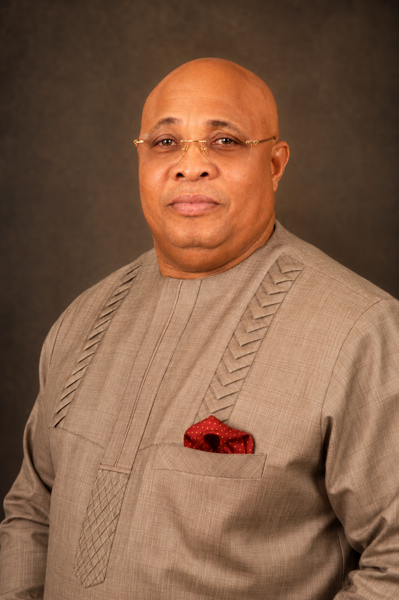
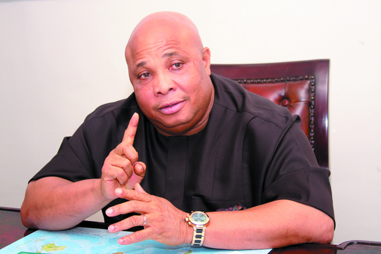

A PEOPLE'S MOVEMENT
Together, We Build a New Imo That Works for All.
A movement of people united by hope, service, integrity and the conviction that Imo State can work better for everyone.

THE OCHOUDO MANDATE GROUP
More Than a Political Movement
Welcome to a movement built on hope, unity, service and the vision of a better Imo State.
This community brings together supporters, admirers and believers in the leadership ideals of Ochoudo Martin Agbaso, a man whose lifelong commitment to the welfare of the people continues to inspire a new generation.

ABOUT MARTIN AGBASO
Leadership Rooted in Service.
Ochoudo Martin Agbaso represents a tradition of leadership that places people at the centre of public life. His journey, values and public service continue to resonate with those who believe Imo can be healthier, stronger, more prosperous and more just.
The Ochoudo Mandate Group exists to build a constructive grassroots community around ideas, civic participation and a shared belief that leadership must deliver visible progress.
OUR GROWING NETWORK
Find Your Mandate Community
Join supporters of the Ochoudo Mandate Group in your Local Government Area, city or anywhere around the world.
EXPAND THE MOVEMENT
Don't See Your Location?
Help us build the movement in your city. Start an Ochoudo Mandate Community where you live.
OUR MANDATE
The Imo We Believe In
Our mission is to promote constructive engagement, share ideas, mobilise grassroots support and champion a vision of an Imo State where good governance, quality healthcare, education, economic empowerment and social justice are accessible to all.
Unity
Service
Integrity
Progress
People First
BE PART OF THE MOVEMENT
Your Voice. Your Community. Your Imo.
Join the Ochoudo Mandate Group and become an ambassador for hope, respect and positive change.